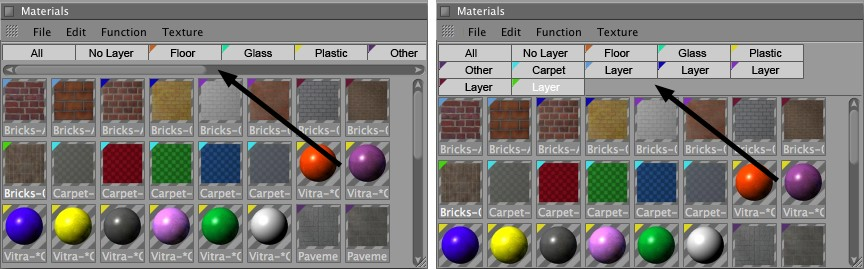

Function available in CINEMA 4D Prime, Visualize, Broadcast, Studio & BodyPaint 3D
编辑菜单
从材质管理器中剪切选择的材质并复制到剪切板中。你可以使用粘贴功能从剪切板中取回材质，即使切换了活动场景（即可以在场景之间复制粘贴材质）。
你可以通过按住 Ctrl 键拖放材质来快速复制材质，第一个复制的材质名称为材质.1，第二个为材质.2，以此类推。
将保存在剪切板中的材质（最后剪切或复制的材质）插入到活动场景中。
删除选择的材质而不讲它们复制到剪切板。另外也可以按退格键或 Delete 键删除。
这两个命令会选择或取消选择所有材质。
你可以选择将材质显示为一个垂直列表。要转回原始显示模式，可以在材质管理器中选择编辑|材质命令。
选择这些设置中的一个来决定材质预览的尺寸（默认是小图标）。
左图中启用单线图层；右图中禁用。
如果使用了许多图层标签，显示材质的空间会显得很拥挤，启用材质列表选项可以让你的材质以列表显示。